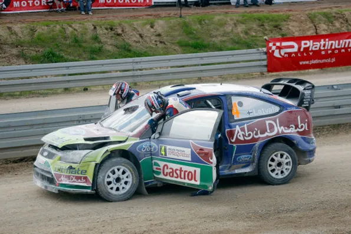
10 +1 Times Drivers Crashed in a Super Special Stage
We all have embarrassing moments. Whether that is entering a room and then immediately forget what we wanted to do, or saying goodbye to someone on a night out only to then walk in the same direction, we all have them. But none are worse than crashing out of a rally on a Super Special Stage. SSS’s are what rally fans call “Mickey Mouse” stages. Stages that serve no purpose other to get casual fans to see rally cars up close. It’s a spectator stage. So, it is incredibly awkward for when one of the best drivers in the world stacks it in one of those. So here are 10 examples of just that: 10 times WRC drivers crashed in an SSS.
1. Jari-Matti Latvala – Rally Poland 2009
Jari Matti has had his fair share of crashes over the years, but this may have been the lowest point of his career. Ford heading into the final stage of the rally as 1-2, with Mikko Hirvonen in 1st and Latvala in 2nd. It was a very good weekend for the blue oval, as Sebastien Loeb had made a rare mistake on the 4th stage of the rally taking a wheel off the car and retiring. So it was extra sweet for everyone at M-Sport as Mikko Hirvonen would take the lead in the driver’s championship and they’d have closed the gap to Citroen in the manufacturers. All the two Finns had to do was finish the second pass of the 2.5km Mikolajki test. Well, Latvala didn’t. The Finn hit a barrel, broke his steering and retired from the rally. Latvala was devastated after the crash, and even said in a post rally interview that he would understand if Ford sacked him. Ford didn’t fire him and the Finn continued driving for Ford/M-Sport until 2012. It is interesting to note though, that without the crash, Loeb would have finished 8th instead of 7th, and in the end Hirvonen lost the championship by one point. Ouch. (Loeb would have won on countback anyway as he had 7 wins compared to Hirvonen’s 4, but still.)
Video of the crash can be found here
2. Conrad Rautenbach – Rally Monte Carlo 2008
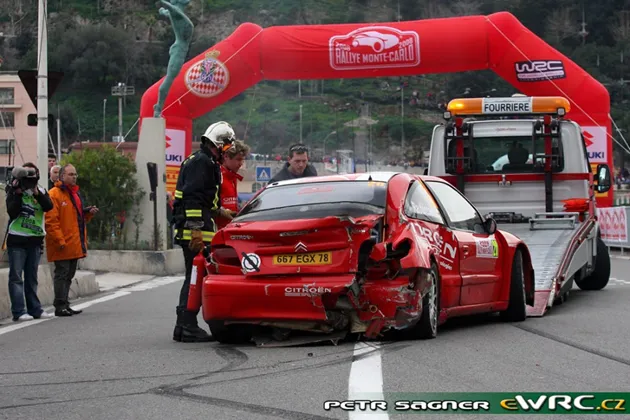
Zimbabwean driver Conrad Rautenbach was making his 2nd outing in a WRC car in the 2008 season opener, and it would be a disastrous rally for the 2007 ARC champion. Rautenbach crashed on the first stage of the rally, after sliding off on the ice. But incredibly, the Citroen Junior driver would end the rally just like he started it. With a crash. He crashed on the swimming pool section of the F1 Monaco circuit, and hit the barriers with the rear, badly damaging the rear of his Citroen Xsara. Rautenbach is mostly known as the person who crashed with Sebastien Loeb in a road section in Rally Jordan 2008 and took the Frenchman out of the lead.
Video of the crash here
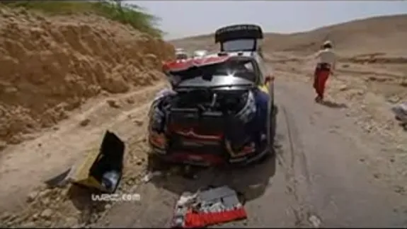
The aftermath of Loeb’s collision with Rautenbach
3. Dani Sordo – Rally Cyprus 2006
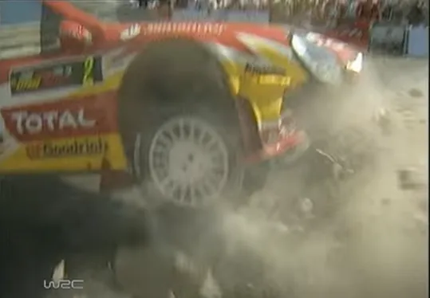
Another Xsara going off in an SSS. Dani Sordo had a bad spell in the middle of the 2006 season. After a 2nd place in Germany, his 4th podium of the season, the Spaniard wanted to show his pace on gravel, but he instead suffered 3 consecutive non finishes in Finland Japan and Cyprus. The Cyprus one was especially embarrassing for the eventual 3 time Rally winner, as he had 2 offs. He first crashed out of 6th on Day 1. But Sordo would also crash on the Limassol city stage, locking up and going straight into a roundabout. (Fun fact, the roundabout stayed the same for 8 years until it was fixed). Sordo wouldn’t have an embarrassing crash like this again, going on to show a lot of pace on gravel as well, winning Rally Sardegna twice.
Video of the crash here (at 43:19)
4. Kimi Raikkonen – Rally Japan 2010
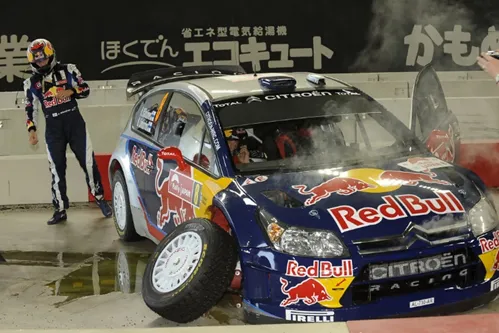
Kimi may have only stayed in the WRC for 2 years, but his spell is still remembered (mostly for the wrong reasons). In Rally Japan, the 2007 Formula 1 World Champion crashed on the pre event shakedown, which was weirdly a super special stage. The Rally Japan organisers must have been very proud of this SSS as they ran it 9 TIMES. Raikkonen clipped an barrier on the inside and broke the suspension of his Citroen C4. It didn’t really matter though, as it was the shakedown and not the actual part of the rally. True to form, Raikkonen would retire from the rally proper on stage 19, crashing out from 7th.
Video of the crash here
5. Mads Ostberg – Rally Portugal 2011
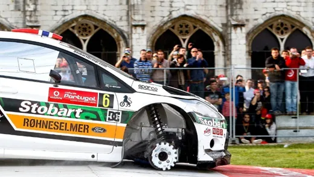
Mads Ostberg arrived in Portugal on a high. The Norwegian driver was signed by M-Sport to drive for the Stobart team (amazing liveries by the way) after impressing on some outings he had with the Fiesta S2000 in Alsace and Germany. Ostberg had the rally of his life in the 2011 season opener in Sweden, leading the rally throughout Day 1 and 2, and in the end finished 2nd, only 6.5 seconds behind eventual winner Mikko Hirvonen. He would also get a solid 5th on the following round in Mexico. But the Norwegian would get a reality check on the first stage of the rally in Portugal. Ostberg would lock up and hit a concrete block, losing his front right wheel in the process. The Norwegian had to retire from Day 1 after that. Ostberg enacted his revenge on Rally Portugal the following year, winning it after Mikko Hirvonen’s Disqualification, which remains the last privateer win to date.
Video of the crash here
6. Mikko Hirvonen – Rally Finland 2004
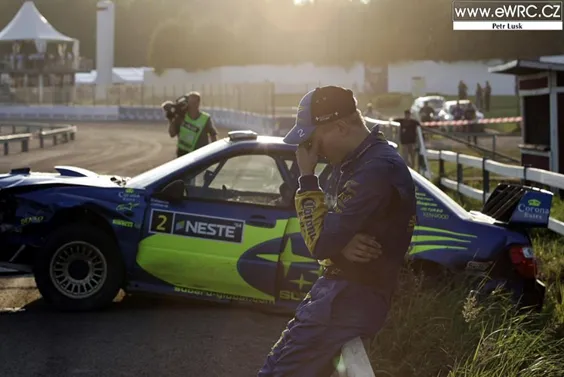
2004 was a tough time for Mikko Hirvonen. The young Finn was drafted in the factory Subaru team after Richard Burns was forced to stay out of the sport due to his health issues. But it was way too soon for him. Hirvonen only scored 29 points in 16 rallies compared to his teammate’s 82. The low point in the Finn’s season was on his home rally in Rally Finland. Hirvonen was running a fine 5th (there were 5 Finns in the top 6 at that point in the rally, see if you can name them all), but he would embarrassingly crash in the Kileri SSS. The Subaru driver hit a barrier when coming up to go under the bridge and broke his rear suspension, which led to him going straight on and hitting a barrier head on on the next square corner. Thankfully Hirvonen would pick up his form after he was signed by Ford, and would go on to have a successful career.
Video of the crash here (at 21:15)
7. Tommi Makinen – Wales Rally GB 1998
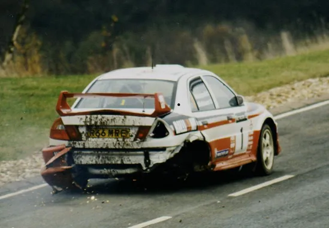
Maybe one of the most famous crashes
in a super special. Tommi Makinen headed to the finale in Great Britain with a
slim 2 point lead over Carlos Sainz. The first few stages of the RAC rally were
tarmac stages around Cheltenham and then the legendary Silverstone Circuit.
Unfortunately for Tommi Makinen, the historic cars had gone through the stages
before the WRC ones, with one dropping oil on the track on stage 5. Makkinen
would hit that oil patch, and slide into a concrete block, ripping his rear
right wheel off the car. Carlos Sainz who was next to the stage was warned
about the oil and narrowingly managed to not hit the same block. Makinen tried
to continue on 3 wheels but he was stopped by the police and had to retire. He
could only watch as Sainz was cruising towards the title. Fate though had other
plans, with Sainz’s Toyota kicking the bucket just 300 meters before the end of
the final stage of the rally, to deny the Spaniard the championship.
Video of the crash and the 1998 battle here
8. Kris Meeke – Rally Deutschland 2017
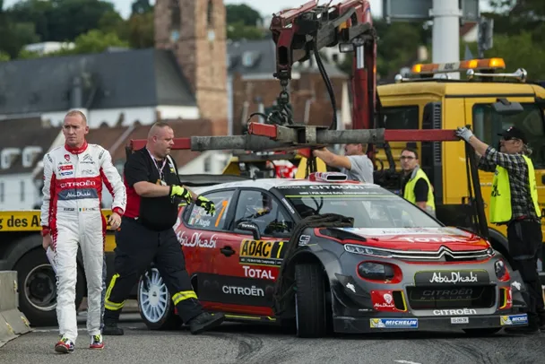
A piece about crashes
couldn’t possibly be complete without including Kris Meeke. The Northern
Irishman had a frustrating start of the season with Citroen in 2017, DNFing 5
times in the first 7 rallies and then dropped for Volkswagen refugee Andreas
Mikkelsen for Poland. Meeke returned to the team in Finland, finishing a low 8th
in the event he dominated the year prior. The C3 WRC had very good tarmac pace
though, so heading to Germany Meeke and Citroen were keen to show it. But
increadibly, Meeke would clip a concrete barrier on the opening stage of the
rally, the 2km Saarbrücken Special, and incur a 10-minute penalty. He would
then retire from the rally altogether before Stage 15 with a mechanical issue.
Teammate Andreas Mikkelsen would finish 2nd, 16 seconds behind
winner Ott Tanak.
Video of the crash here
9. Thierry Neuville – Rally Sweden 2017 and Rally Deutschland 2017
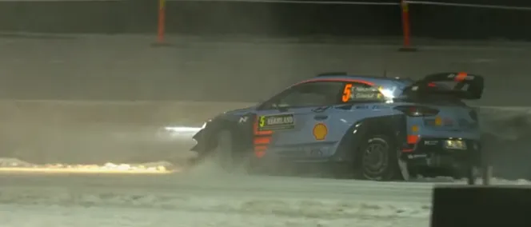
It's a double inclusion on number 9 for Thierry Neuville. The Belgian had come out guns blazing in 2017, and led the first 2 Rallies, Monte and Sweden. But he wouldn’t win any of them, in fact he crashed in both of them. First he touched a small rock in a cut in Monte whichin turn broke his rear right suspension, and then in Sweden the unthinkable happened. He headed to the Karlstad super special with a healthy 40s advantage over Jari Matti Latvala, in a rally no one expected him to do well in. But the Hyundai driver would throw it all away, when he clipped a stack of tyres which broke his front right suspension, forcing him to drop out of the top 10. He would bounce back to win Sweden the next year.
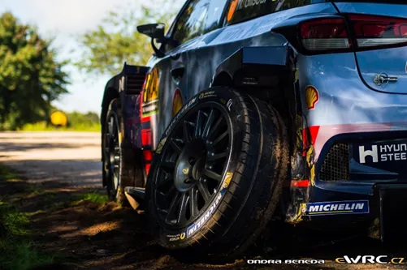
It's not over yet though. Neuville
headed to Germany tied on points with Sebastien Ogier, and was involved in a
battle with the Frenchman throughout Day 1 for 3rd. On the first
stage of Day 2 which was the famous 2km Arena Panzerplatte which includes parts
of the longer 40km version, Neuville cut a corner only for his suspension to
break. No idea how, it didn’t seem like there was a rock or anything, just by
the compression the suspension broke. Neuville would leave Germany with no
points, and lose the championship to Ogier, finishing 2nd 26 points
adrift of the Frenchman. Without these 3 DNFs, things would have been different
for Neuville and Hyundai…
Video of the crashes here and here (starts in 0:45)
10. Andreas Mikkelsen – Rally Acropolis 2022
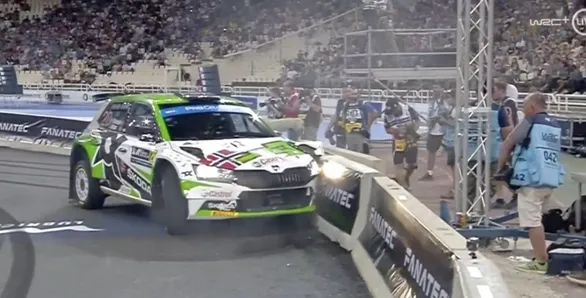
Our most recent inclusion. Acropolis was a must win for Andreas Mikkelsen if he wanted to have any shot for the WRC2 crown, as 2 engine related retirements in Portugal and Sardegna left him behind in the championship. The Toksport driver would throw it all away in the opening Super Special Stage, as he braked too late after the jump and ploughed into the concrete blocks, breaking his front left suspension. He would finish the rally 7th in his class, +7:53 on teammate and eventual champion Emil Lindholm, after pushing a lot on the stages proper. In fact without the 10 minute penalty he incurred, he would have been ahead of Toyota’s Takamoto Katsuta! (But then again he probably wouldn’t have pushed that hard). Mikkelsen lost the championship to Lindholm and also lost a potential Hyundai seat for 2023 in the offseason, and is now rumored to be back in the WRC2 with Toksport for Portugal.
Video of the crash here
Which one out of these do you think it's the worst and are there any we missed ? Be sure to let us know in the comments
All pics are from the Red Bull Content Pool


Comments